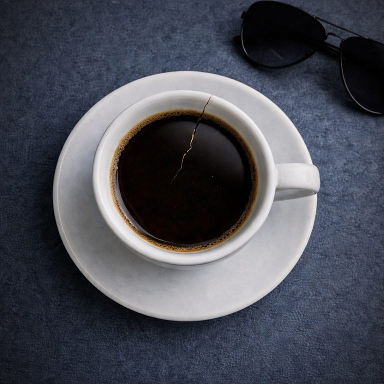

Terza parte
Occhiali scuri

Ada è il mio capo, alla pescheria, dove lavoro ormai da cinque mesi. Non sono mai mancata, anche quella volta che avevo la febbre a 38 ero qui.
Arrivo sempre in anticipo e sono l’ultima ad uscire.
Ho imparato presto come fare per pulire il pesce, so sporzionarlo e do anche buoni consigli alle massaie. Ma sapete che ultimamente cercano proprio me per essere servite?
Sento che Ada mi vuole bene e non mi sembra che sia solo perché sono una dipendente disciplinata. Mah, chissà perché mi vuole bene…
In questi cinque mesi è la terza volta che mi presento al lavoro con i miei occhialoni: montatura nera e lenti grandi, scure come la notte. Con la mia vestaglina bianca da pescivendola sono molto fashion direi.
Oltre che fashion, sono diventata anche una “cacciaballe” provetta. Gente, c’è poco da dire, Viola è proprio brava ad imparare a fare cose nuove, anche difficili. In pochi mesi sono diventata una pescivendola provetta e una provetta cacciaballe.
Nell’ordine ho rifilato ad Ada queste balle:
Balla numero uno: Mannaggia, ho sbattuto nello spigolo in cucina.
Balla numero due: Porca miseria, mi è venuta la congiuntivite.
Balla numero tre: Via, bisogna che tolga quello spigolo dalla cucina, ci sbatto di continuo. Questa volta sono anche scivolata e mi sono slogata una caviglia.
La balla numero tre l’ho detta giusto pochi minuti fa.
Ma Ada non è scema.
Mi ha guardato a lungo, con espressione di compassione. Mi ha messo con tenerezza una mano sulla spalla e mi ha detto: “Oggi non ci sarà tanto lavoro, posso cavarmela da sola. Prenditi la giornata libera, ti riposi e ti rimetti in forma.”
Le lenti scure dei miei occhialoni fashion fanno bene il loro lavoro, schermano di tutto, tranne le lacrime che copiose hanno iniziato a scendere e a rigarmi il volto.
Cavoli se avrei voluto trattenermi! Sentivo la dignità che si scioglieva insieme a quelle lacrime salate. Niente da fare, non ce l’ho fatta a ricompormi.
E allora mi sono arresa, singhiozzando ho ringraziato Ada e sono uscita, a testa bassa, zoppicando.
Ed eccomi qui, per strada, in questa fredda mattina di gennaio. Sopra di me nuvoloni neri gonfi di pioggia.
Zoppico e tengo i miei fedeli occhiali scuri. Ma che bello spettacolo deve essere guardarmi!
Almeno ho smesso di frignare. Non vorrei più piangermi addosso.
Cammino e recrimino su quello che non va a casa, su tutte le cose sbagliate che faccio. Eppure sono una che si impegna, imparo velocemente, ma come è possibile che proprio lì, dove vorrei essere perfetta, sbaglio tutto?
Ma proprio tutto…
Questi pensieri mi rimbalzano disordinatamente in testa, la occupano tutta. Confido nei miei piedi, spero che anche se malandati sappiano riportarmi a casa.
All’improvviso una mano mi afferra il braccio.
Faccio un salto, mi proteggo la testa istintivamente e mi giro.
È Duska… No! Ci mancava anche lei!
Duska è la mia migliore amica. Ma è più di questo, per me lei è anche la sorella maggiore che non ho mai avuto, o almeno così la consideravo prima, quando avevo una vita fuori dalla mia attuale simpatica routine di casa - lavoro - casa, che non prevede più nessun partecipante esterno.
Duska è piccoletta, quasi quanto me. Ma lei è un vulcano, trasmette forza e determinazione solo a vederla.
Ha avuto una vita assurda che l’ha forgiata invece di abbatterla: è scampata ad una guerra, è rimasta sola in terra straniera a tirare su la sua piccola Anja, il tutto con la sua dolce tenacia che fa apparire ogni cosa facile.
Ci siamo incontrate grazie alla musica: il mio “orecchio assoluto” che incontra la sua voce, la sua chitarra. La portava sempre con sé. Noi due insieme, lì al tavolino in angolo del bar sotto casa, lei che canticchia la sua ultima canzone, io che scrivo al volo le note sul pentagramma, gente stranita intorno che ci guarda…
e risate, tante risate insieme.
Risate che sembrano appartenere ad un’altra vita.
Duska è un mastino, non sarà facile fare la “cacciaballe” con lei. Sono mesi che la evito, so che non mollerà.
E allora neanche ci provo, non ne ho le forze. La seguo al solito bar, al solito tavolino in angolo e lì le dico tutto.
Le dico che non solo ho dovuto lasciare il mio incarico all’orchestra, ma che non tocco più il flauto da oltre sei mesi.
Le dico che lavoro nella pescheria di Ada.
Le dico che le cose a casa vanno male, molto male.
Le dico che è davvero carina ad offrire il suo aiuto, ma certo che so che posso contare su di lei.
Le dico che però devo tornare a casa.
Le chiedo di scusarmi, ma ora proprio devo andare.
Non so neanche cosa altro le dico.
Duska sta praticamente sempre zitta. Mi guarda con quei suoi occhi penetranti, parla solo per offrirmi il suo incondizionato aiuto e per chiedermi se ricordo a memoria il suo numero di telefono.
Ci alziamo, prima di andare mi abbraccia e mi sussurra all’orecchio: “Guardati Viola, ti prego… guardati.”
Sono di nuovo in strada, zoppico e ho gli occhialoni scuri.
Le lacrime scendono… di nuovo…
Ma quante ce ne sono negli occhi? Si potrà morire disidratati a forza di piangere?
Sulla mia sinistra una vetrina.
Se mi girassi mi vedrei riflessa, ma non lo faccio, tiro dritto.
Non voglio farlo, non posso farlo.
Mi spiace Duska, ma ora non posso, non posso guardarmi.
Adesso ascolta il brano
Occhiali scuri
La canzone non è ancora disponibile. Riprova tra poco.